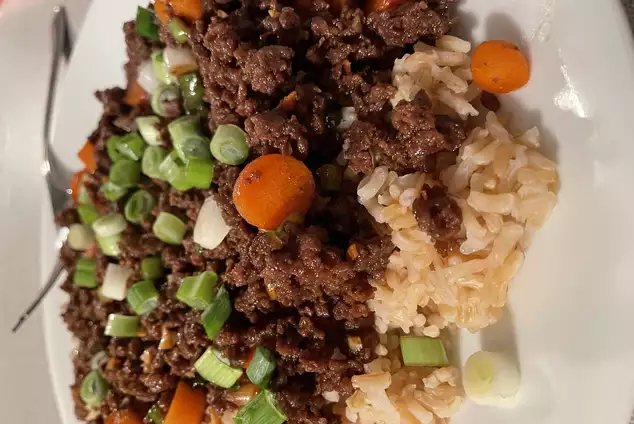

Easy Korean Ground Beef Bowl

Description
Korean beef bowls are quick and easy to make. The ingredients can easily be adjusted to suit your taste.
Serve over warm rice or spiralized vegetables.
Ingredients
- 1 pund lean ground beef
- 5 cloves garlic, crushed
- 1 tablespoon freshly grated gindger
- 2 teaspoons toasted sesame oil
- ½ cup reduced-sodium soy sauce
- 6 green onions, chopped, divided
- 4 cups hot cooked brown rice
- 1 tablespoon toasted sesame seeds
Steps
- Heat a large skillet over medium-high heat.
Add beef and cook, stirring and crumbling into small pieces until browned, 5 to 7 minutes.
Drain excess grease.
- Add garlic, ginger, and sesame oil, stirring until fragrant, about 2 minutes.
Stir in soy sauce, brown sugar, and red pepper. Cook until some of the sauce absorbs into the beef, about 7 minutes.
Add 1/2 of the chopped green onions.
- Serve beef over hot cooked rice; garnished with sesame seeds and remaining green onions.